Modules are not the only type of container for macros. You may have noticed that while in the VB Editor, the code screen stays available when you click on worksheets or on 'ThisWorkbook'. Subs and functions can have a worksheet-level scope or a workbook-level scope if desired.
If a module-level or workbook-level macro tells Excel to print a certain value to a certain range, then if no worksheet is specified in the code, the application will apply the macro to whichever sheet is currently selected. A worksheet-level macro, however, will by default print to the worksheet that the macro is stored on, even if another sheet is currently selected (you can reference specific sheets or ActiveSheet in the code, which will override this behavior).
Another distinction between worksheet-level macros and module or workbook-level macros is that you cannot call a worksheet-level macro from within another macro that is module or workbook-level (or belonging to another sheet). You will receive a “Sub or Function Not Defined” error. Likewise, if a workbook-level macro is called from another workbook, it will fail to be recognized.
Despite these constraints, the limited scope is useful when creating events. Events involve 'listening' for certain user actions, such as the changing of values on a worksheet or the saving of a workbook, and executing specified actions in response. Some practical examples of event usage include:
The last one, automatically refreshing all pivot tables upon opening, lets you avoid saving the underlying data of the pivot tables, which can greatly reduce file size. It is particularly easy to demonstrate because only one line of code is necessary to perform the action. From within the VB Editor, select 'ThisWorkbook' in the Project Explorer, and then notice the two dropdown lists just above the code window. From the list on the left, select 'Workbook'.
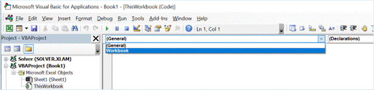
The following code automatically populates:
Private Sub Workbook_Open()
End Sub
This happens to be the trigger that we are looking for, opening of the workbook. In order to have all pivot tables refresh upon opening of the workbook, I simply insert the line ActiveWorkbook.RefreshAll between the two lines of code above.
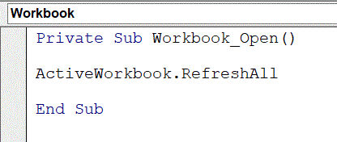
This won't always be the particular action you are looking for, however. Notice that, with the left dropdown list above the code window now set to 'Workbook', a list of potential triggers to listen for are now available from the dropdown on the right. These include workbook activation, opening, saving, closing, etc. If I select a new action like 'BeforeSave', then the first and last line of a new macro will be populated, including any necessary parameters as arguments (which you can ignore).
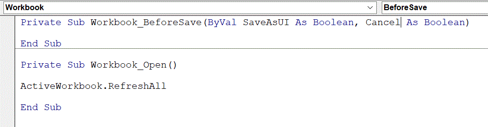
'BeforeSave' means that when the user clicks Save, any actions in this macro will be executed before the saving of the file begins.
After selecting a worksheet in the Project Explorer, we can select 'Worksheet' from the dropdown list above the code window on the left, and the dropdown on the right will display a list of actions that we may listen for.
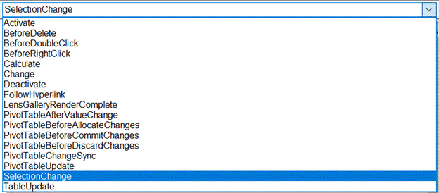
The default action is 'SelectionChange', which means that any time the user clicks on a cell other the currently selected cell, the macro will be triggered. Other commonly used ones include 'BeforeDoubleClick', which essentially means 'upon double-click', 'Change', which refers to a change in values on the worksheet, and 'PivotTableUpdate', which lets your macro respond to changes in pivot table filters (handy for re-propagating formulas).
Two reasons why you may want to disable events are 1) you are making changes as a creator rather than user, and 2) you don't want the events to be triggered during the execution of other macros (which can be cause inefficiency or infinite loops).
To disable events while making changes in the graphical interface, turn on 'Design Mode' by selecting it under the Developer tab, and turn it off once you are done editing. To prevent other macros from triggering events, use the line Application.EnableEvents = False within those macros, before the lines of code you want to prevent from triggering events. It is important to later use the line Application.EnableEvents = True, or else the disabling effect will continue beyond the running of the macro.
You may want a worksheet-level event to execute only for certain ranges (or a workbook-level event to execute only for certain sheets), and this can be accomplished by telling the macro to exit execution unless the changes or selections from the user are upon the relevant areas. This involves using the Target object applicable to events, and commonly involves accessing its Address, Row, and Column properties. I will illustrate all three at once by having a Worksheet_Change event provide a message box with the address, row, and column when a change occurs.
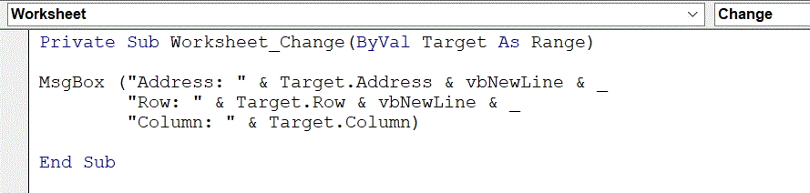
I then make an arbitrary change, entering the value 1 into cell F7, and the result is the following:
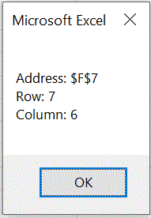
Note that the address property will return a range if multiple cells are affected, but the row and column properties will refer to the first row and first column affected. For example, if I select all cells on the worksheet, and press delete, the result is the following:
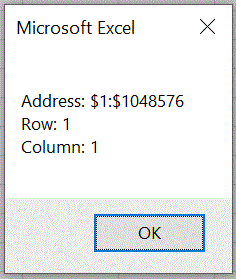
So, let's say we have a table of data ranging from B4:F11, and we want to insert a double-click to sort macro. The only area we want a response to user action from is the column headers, which are limited to row 4, and columns 2 through 6. We can then write the following code to ensure that double-clicking elsewhere on the sheet will have no result (note that I changed the trigger to 'BeforeDoubleClick').
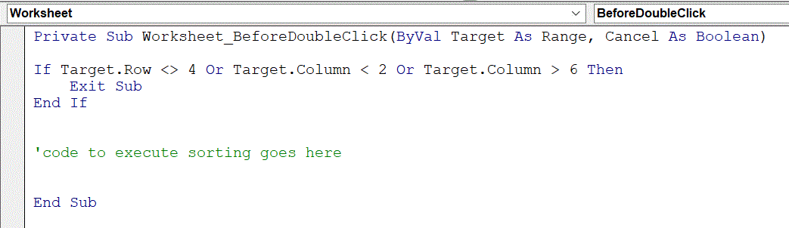
As for the sorting piece – let's say we have the following sales data for a series of stores.
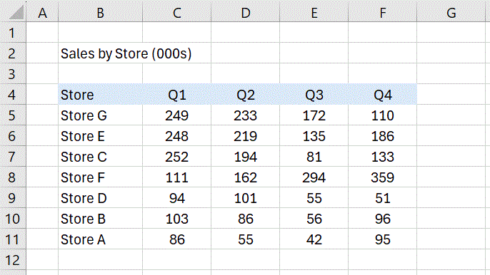
The range of this data is the same as the example used above, so the first part of our code is done. Now, we need to add the action to take, which will be a sort. I don't have the syntax and arguments memorized, so I will use the macro recorder to get a code template, and then change some of the hard-coded values to variables. I press record, sort one of the columns (arbitrarily choosing F), and then end the recording and inspect the code that was captured.
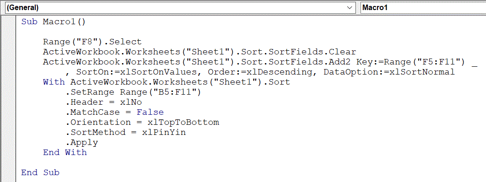
The first line is an unnecessary Select statement that can be removed. The third line contains Key:=Range(“F5:F11”), because I sorted by F when recording, and we will want to make this dynamic so that it refers to whichever column the user clicks on.
One way to grab the column letter is using the Target.Address property, combined with the Mid text function. The Target.Address has absolute references, so the first character of the address is a dollar sign. We'll use ColLtr = Mid(Target.Address, 2, 1) to extract the second character, which is the column letter. We could add some logic to deal with two-character columns if our data extends past column Z, but a) in this case we know it's unnecessary, and b) there is an alternative involving the Cells object, which we will discuss next.
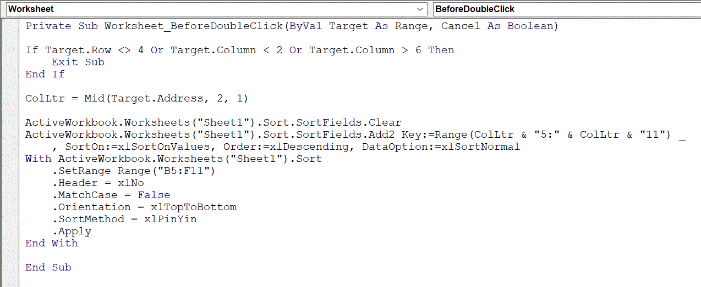
Notice that in addition to our line of code extracting the column letter, the sorting key (end of the second line starting with ActiveWorkbook, has changed to Range(ColLtr & “5:” & ColLtr & “11”). The table will now sort by whichever column the user double-clicks on.
As mentioned above, an alternative to extracting column letter is using the column number, along with the Cells object. Below I use Col = Target.Column to extract the column number of the targeted header, and set the sort key as:
Key:=Range(Cells(5,Col),Cells(11,Col)
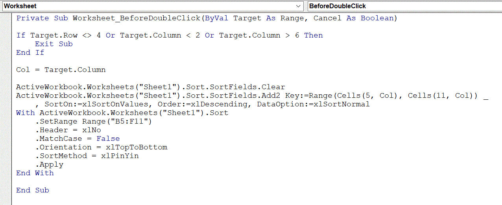
An alternative is to assign Range(Cells(5,Col),Cells(11,Col) to a Range object variable using Set Rng = Range(Cells(5,Col),Cells(11,Col) (where Rng is the arbitrary name of the variable), and then let the sort key be equal to that.
To make the macro dynamic toward the size of the data, you would want to capture some last-row information, through a line such as LastRow = Range(“b” & Rows.Count).End(xlUp).Row, and then substitute LastRow into anywhere we see a hard-coded 11 above.
Events can be designed to listen to pretty much any trigger, and the recorder can provide a template of code for pretty much any action, so get creative with your application building!